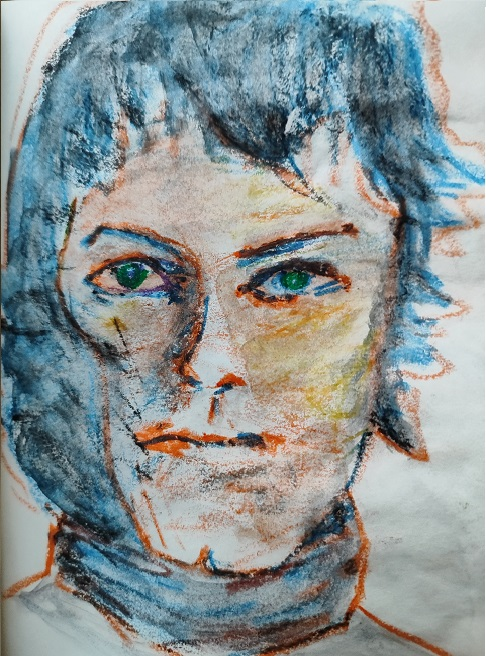
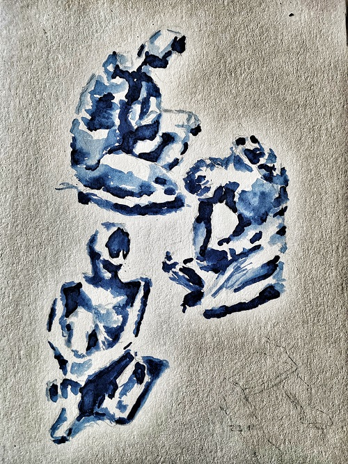
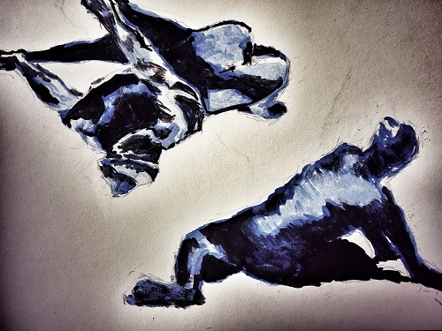

“Rostro en calma” – Cera sobre papel – 148×210 mm“Fragmento Barjola” – Cera sobre papel – 148×210 mm Serie inspirada en la Sala SOLO (Madrid)
Acrílico y aerógrafo (500×700 mm)
“Encuentro” – Acrílico sobre lienzo – 500×700 mm
Acuarela (A4 - 210×297 mm)
“Ecos de Matisse I” – Acuarela – 210×297 mm Serie inspirada en la Fundación Canal (Madrid)

“Ecos de Matisse II” – Acuarela – 210×297 mm Serie inspirada en la Fundación Canal (Madrid)

“Ecos de Matisse III” – Acuarela – 210×297 mm Serie inspirada en la Fundación Canal (Madrid)
Carboncillo (A4 - 210×297 mm)
“Sombra y gesto I” – Carboncillo sobre papel – 210×297 mm“Sombra y gesto II” – Carboncillo sobre papel – 210×297 mm“Sombra y gesto III” – Carboncillo sobre papel – 210×297 mm
Lápiz (A4 - 210×297 mm)
“Trazo íntimo I” – Lápiz sobre papel – 210×297 mm“Trazo íntimo II” – Lápiz sobre papel – 210×297 mm“Trazo íntimo III” – Lápiz sobre papel – 210×297 mm“Trazo íntimo IV” – Lápiz sobre papel – 210×297 mm
Pastel (A4 - 210×297 mm)
“Retrato Consuelo” – Pastel sobre papel – 210×297 mm Inspirado en la fotógrafa Consuelo Kanaga